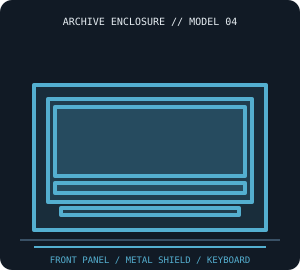

[ IDENTIFIED SYSTEM // ATARI 1200XL ]
Atari 1200XL Home Computer Enclosure
Low-profile keyboard-integrated desktop shell, approximately 15.1 × 12.0 × 3.0 in (W × D × H), with shielded board and distinctive front control panel.

MODEL / REVISION BOUNDARY: Confirm 1200XL identity from the bottom label and board assembly; this unusual early XL revision has differences from 600XL/800XL and later XE systems.
Enclosure specifications
| Exact model / generation | Atari 1200XL home computer, model 1200XL (1983); not 600XL/800XL/65XE/130XE. |
|---|---|
| External dimensions | Approximately 15.1 × 12.0 × 3.0 in (W × D × H) as a reported case envelope; allow extra space for cables and verify the feet and regional specimen. |
| Form factor / board layout | Keyboard computer with molded low-profile enclosure and full-width metal shielding; proprietary Atari board, no standardized motherboard tray. |
| Proprietary power supply | External 9-VAC Atari transformer/brick; system-specific plug and AC output. It is not a DC-input ATX chassis and XL-family supply compatibility must be verified. |
| External bays / ports | No standardized drive bay. Rear SIO, cartridge and video ports support external peripherals; attached disk units are not enclosed in the 1200XL shell. |
| Internal bays / mounts | No standard disk bay; the stock 1200XL enclosure contains the board/shield and keyboard only. |
| Service / compatibility | Follow Atari 1200XL field-service documentation for board and case disassembly. Document shielding, front LEDs/keys and keyboard ribbon routing before removing the planar. |
| Revision identification | Confirm 1200XL identity from the bottom label and board assembly; this unusual early XL revision has differences from 600XL/800XL and later XE systems. |
Service, restoration & fit notes
Follow Atari 1200XL field-service documentation for board and case disassembly. Document shielding, front LEDs/keys and keyboard ribbon routing before removing the planar.
External 9-VAC Atari transformer/brick; system-specific plug and AC output. It is not a DC-input ATX chassis and XL-family supply compatibility must be verified.
- Record the full model/type label, board and power-supply assembly numbers, drive labels and manual revision before disassembly.
- Preserve original shields, brackets, hinges, feet, keyboard/CRT harnesses and proprietary fasteners with this exact enclosure; do not assume contemporary PC standards apply.
- Dimensions are approximate where noted; measure the actual specimen and leave clearance for cables, vents, lids/handles and attached peripherals.
Manufacturer & archival manual citations
- Atari 1200XL Home Computer Field Service Manual, Rev. 01 — Internet ArchiveAtari technical service manual for the exact 1200XL system.
- Atari 1200XL Home Computer Owner’s Guide — Internet ArchiveAtari operator guide for the 1200XL model.
Manuals may cover only a stated revision or configuration; compare the title page and machine labels before applying procedures.